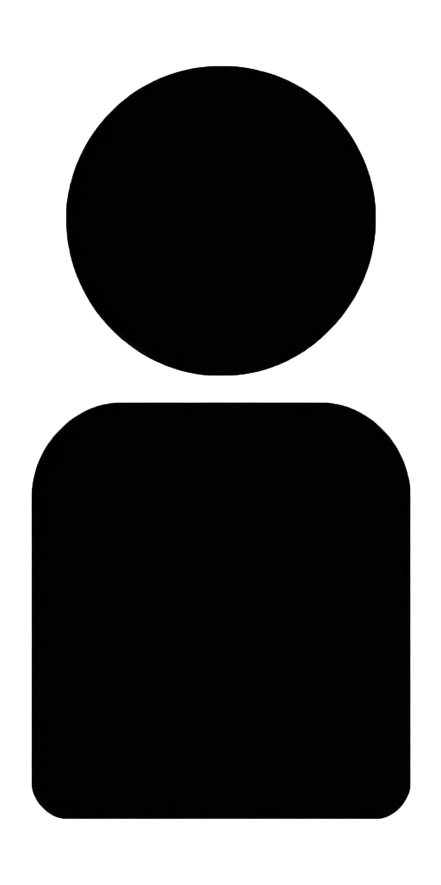

三体
文明模拟器
恒纪元
观星
星球状态
文明诞生时行星的初始状态
正常
1
2
3
4
5
6
蛰伏
时间快进1万年
确定
第1号文明
人口

10000
原始时代
0%
10000000 年后，星球将被恒星吞噬
科技
?
?
?
?
?
?
?
?
观星
自动
文明重启
游戏设置
新游戏
警告：宇宙重启
归零者将宇宙重置，开启新的轮回
这将会
彻底抹除
当前宇宙的所有历史记录和成就！
我再想想
确认重置
注意
确认
文明墓地
平均存活
0 年
最长存活
-
最高时代
第1号 原始时代 0%
最高人口
第1号 10000
点击展开更多数据 ▼
灾难发生统计
全图鉴收集率
科技与天赋
0% (0/0)
成就
0% (0/0)
文明时代统计
成就
达成目标收集星星
成就系统
（请先导入包含成就表的Excel）
天赋
从每行的3个科技中选择1个
已获得：
0
（请先导入包含天赋表的Excel）
文明
历史
成就
天赋
0
选择一项强大的天赋！